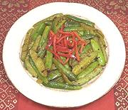

|
Tindora Fry #1(Dry Curry)India | ||||
| Serves: Effort: Sched: DoAhead: |
4 side *** 20 min Part |
A bit intense for a main dish, this recipe makes a good accent side dish. Tindora, also known as "ivy gourd", is popular all over India. It is usually eaten while still green (it turns red inside as it ripens). See Note-3 for variations. | |||
|
1 1/2 1 1 1/4 1/2 1-1/2 1/4 1/8 1/2 2 |
# in cl t t t T t t t T |
Tindora (1) Ginger Garlic Cumin Seeds Turmeric Chili powder (2) Oil Cumin Mustard seed Salt Water |
PREP
|
isv_tindora1 050301 r 071004 - www.clovegarden.com
©Andrew Grygus - agryg@aaxnet.com - Linking to and
non-commercial use of this page is permitted.